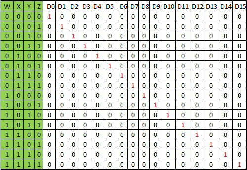

Theory
Stuct-at-Fault
A Stuck-at fault (SAF) is a logic-level fault that mimics a manufacturing defect on a digital device, circuits, etc. A Stuck-at-Fault is of two types: stuck-at-0 (SA0) and stuck-at-1 (SA1) fault. Stuck at faults occur when a line is permanently stuck to Vcc or ground giving a faulty output. This line may be an input or output to any gate. Also this fault can be single or multiple stuck at faults, Although in this experiment we will only talk about single stuck at faults.
Example of stuck-at-0:

Example of stuck-at-1:

A fault model is an engineering model of something that could go wrong in the construction or operation of a piece of equipment. From the model, the designer or user can then predict the consequences of this particular fault. To detect such fault, a suitable fault model is used. The user deliberately make Vcc or grounded positions and checks output. The user checks all types of faults that may occur in the circuit.
4-to-16 decoder using 3-to-8 decoder
The parallel inputs x, y & z are applied to each 3 to 8 decoder. The complement of input, w is connected to Enable, E of upper 3 to 8 decoder in order to get the outputs, D0 to D7. These are the first eight minterms. The input, w is directly connected to Enable, E of lower 3 to 8 decoder in order to get the outputs, D8 to D15. These are the last eight minterms.

when the w is at logic '0' the above decoder is turned on and gives output (D0 to D7), and when w is at logic '1' the below decoder is turned on and gives output (D8 to D15).The truth table of the 4 to 16 decoder is as follows :-
